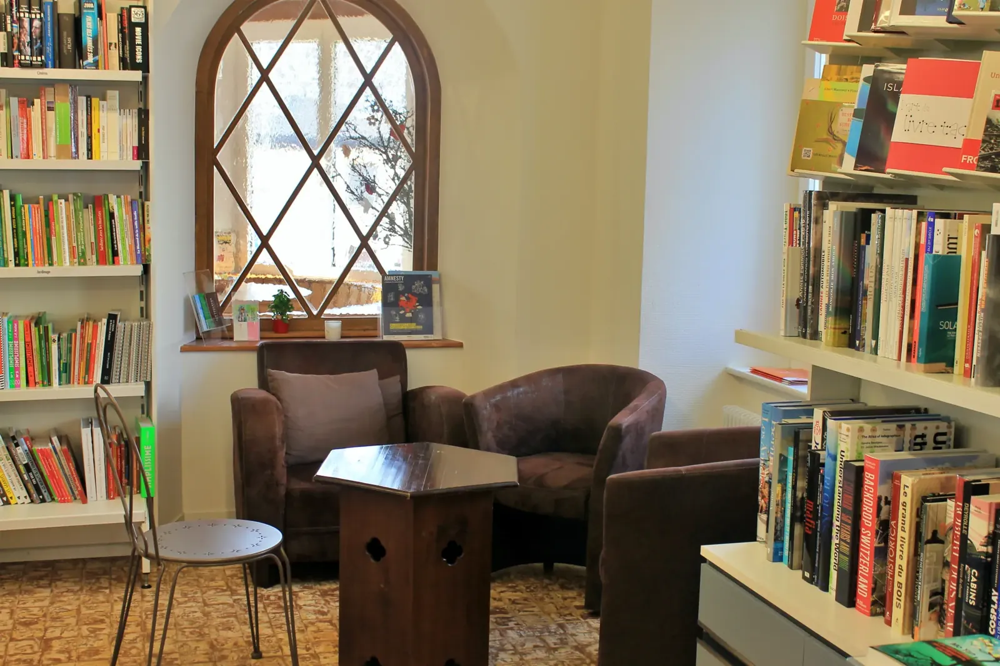
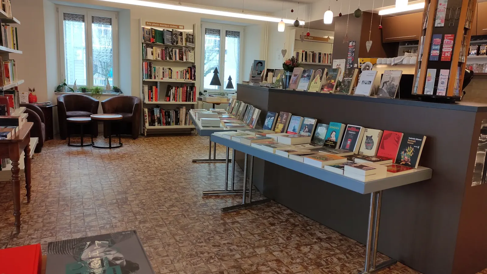
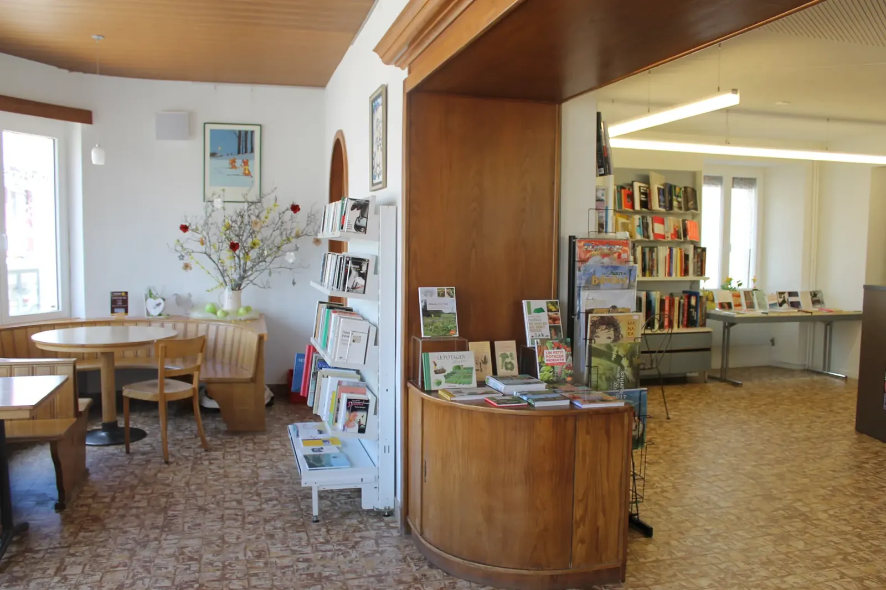
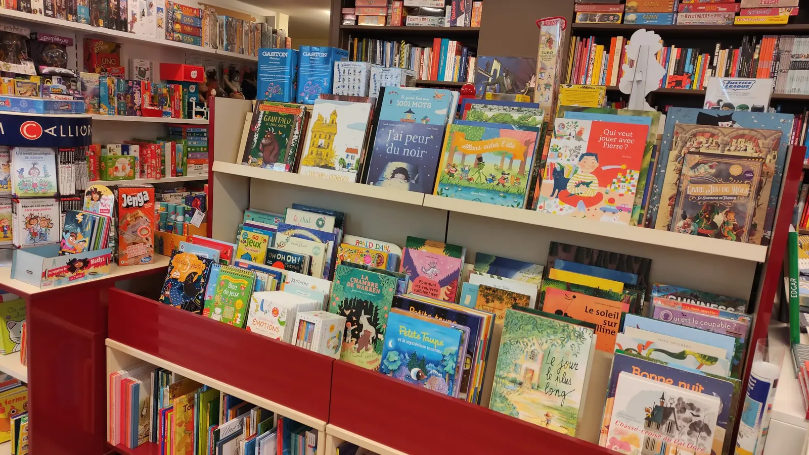
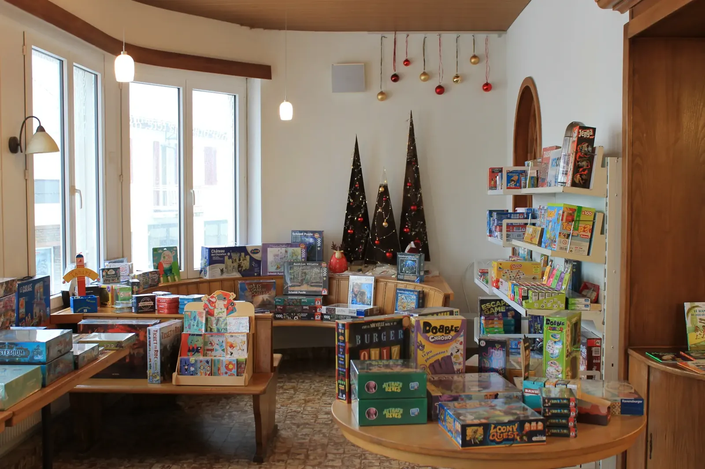
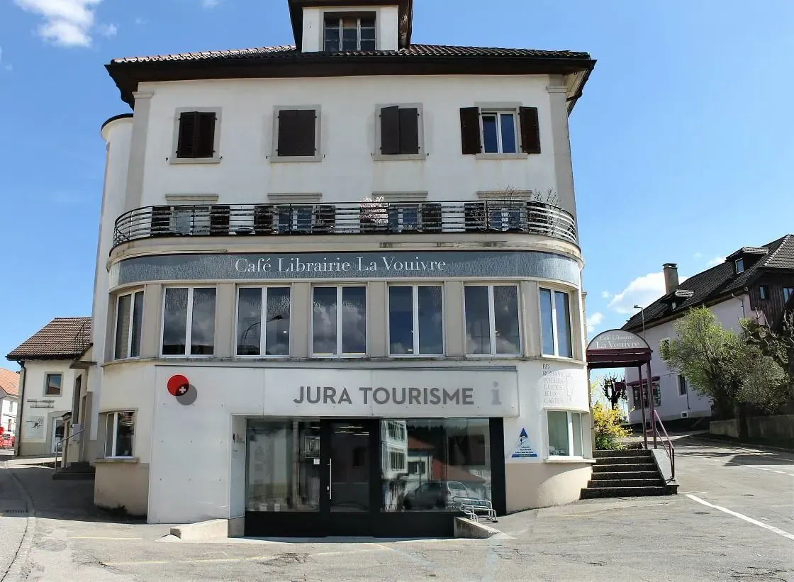

La Vouivre
Café-librairie au centre du village
Une librairie généraliste qui existe depuis plus de trente ans, avec un petit espace café de vingt places, pour le public de la région comme pour celles et ceux de passage.
Mardi au vendredi 8 h 30 – 12 h · 13 h 30 – 18 h 30 · samedi 8 h 30 – 17 h

« Les trusts ne parviendront jamais à faire disparaître le petit libraire indépendant, comme cela a été le cas pour l'épicier ou le crémier. »George Orwell, Quand j'étais libraire, 1936
Un lieu hybride
La librairie est à la fois un commerce et un lieu de culture. Au-dessus de l'office du tourisme, on y trouve un choix de livres dans de nombreux domaines, des jeux pour tous publics, et un espace café pour s'asseoir un moment.
Les rencontres avec les auteurs, les ateliers de réflexion et les soirées jeux sont portés par l'Association La Vouivre, une équipe de bénévoles qui épaule les libraires.
- Plus de trente ans à Saignelégier
- Vingt places, sans alcool et sans cuisine
- Commandes en français, allemand et anglais
- Un choix pour tous les publics
- Entrée à l'arrière du bâtiment pour les personnes à mobilité réduite
Au programme
-
Jeudi 26 novembre · 19 h
Martha Nussbaum, Les émotions démocratiques
Synthèse et choix du programme de printemps.
-
Samedi 28 novembre · 19 h
Grand tournoi de « jass au soja »
Vous connaissez le « jass au cochon » ? En voici la version végétalienne.

Commander un livre
Il n'est pas en rayon ? La Vouivre peut obtenir la très grande majorité des ouvrages disponibles sur le marché, en français, en allemand et en anglais.
Remplissez le formulaire de commande ou passez par la boutique LivreSuisse, puis venez le chercher au village.



Nous trouver
Rue de la Gruère 6
2350 Saignelégier
Au centre du village, au-dessus de l'office du tourisme.
| Lundi | Fermé |
| Mardi | 8 h 30 – 12 h 13 h 30 – 18 h 30 |
| Mercredi | 8 h 30 – 12 h 13 h 30 – 18 h 30 |
| Jeudi | 8 h 30 – 12 h 13 h 30 – 18 h 30 |
| Vendredi | 8 h 30 – 12 h 13 h 30 – 18 h 30 |
| Samedi | 8 h 30 – 17 h, non-stop |
